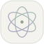

音から色へ
高い音を暖色、低い音を寒色へ対応させます。大きな音ほど鮮やかで明るくなります。これは作品のために選んだ対応で、人の感じ方には個人差があります。

LUMEN. 音と光のアトリエAN INTERACTIVE LIGHT STUDY 01 — 03
指先の軌跡が、光の風景になる。
なぞる、音を重ねる、ただ眺める。
あなただけの一瞬を描いてみてください。
小さな光が集い、ほどけて、花ひらく。
DRAG TO CREATE LIGHT なぞって光を描く
無音のデモを表示しています。キャンバスはそのままなぞれます。
上をなぞると暖色の鋭い光、下をなぞると寒色の丸い光に。速くなぞるほど光が増えます。マイクは停止すると解放され、音源や声を外部へ送ることはありません。
BEHIND THE LIGHT
同じ音を、色・形・数字で見てみる。
学生の作品の出発点になった実験です。
高い音を暖色、低い音を寒色へ対応させます。大きな音ほど鮮やかで明るくなります。これは作品のために選んだ対応で、人の感じ方には個人差があります。
音が高くなると輪郭が鋭くなり、大きくなると角や波の数が増えます。形の外側の大きさをそろえることで、輪郭の違いを比べられます。
声の繰り返しから音の高さを推定します。息や打楽器などは高さを決めにくいため、音の大きさや周波数の分布でも光を動かします。表示の音量は騒音計のdBではありません。
音を0〜1の値へそろえ、色や形の式に入れるのが基本です。core.jsでは関数と条件分岐、renderer.jsでは粒子のリストと繰り返しを使っています。公開版のPython教材と見比べながら、色の範囲や角の数、光の寿命を変更できます。